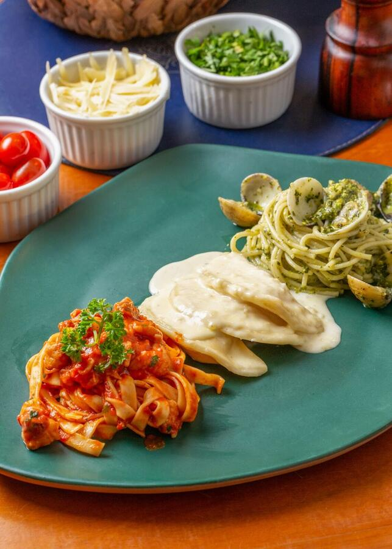
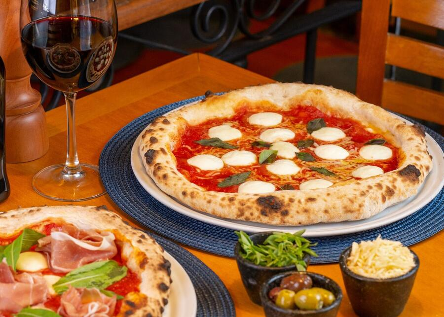

A casa
Itália à mesa, a baía à vista
Um restaurante italiano aconchegante, com mesas ao ar livre voltadas para o mar de Búzios.
Pizza napolitana assada no estilo tradicional, massas e pratos da cozinha italiana. Para acompanhar, uma boa carta de vinhos, coquetéis e sobremesas.
Abre todos os dias a partir das 17h30, para o jantar, no Triângulo de Búzios. A casa aceita reservas.
7 diaspor semana
17h30abre às
4,7no Google


nº950
Pizza napolitana
A verdadeira, de Nápoles
O Maria Italiana é membro da Associazione Verace Pizza Napoletana, a associação de Nápoles que reconhece as pizzarias que seguem o método tradicional da pizza napolitana.
A casa é o associado de número 950 no mundo.
Galeria
Do pôr do sol ao jantar
O deck de frente para o mar, o salão e a cozinha da casa.
Horários
Jantar todos os dias
- segunda17h30 – 23h30
- terça17h30 – 23h30
- quarta17h30 – 23h30
- quinta17h30 – 23h30
- sexta17h30 – 0h
- sábado17h30 – 0h
- domingo17h30 – 0h
Aceita reservas pelo WhatsApp ou pelo telefone (22) 3301-6144.
Onde fica
Armação dos Búzios – RJ, 28950-230 Como chegar
Triângulo de Búzios
Av. José Bento Ribeiro Dantas, 468Armação dos Búzios – RJ, 28950-230 Como chegar